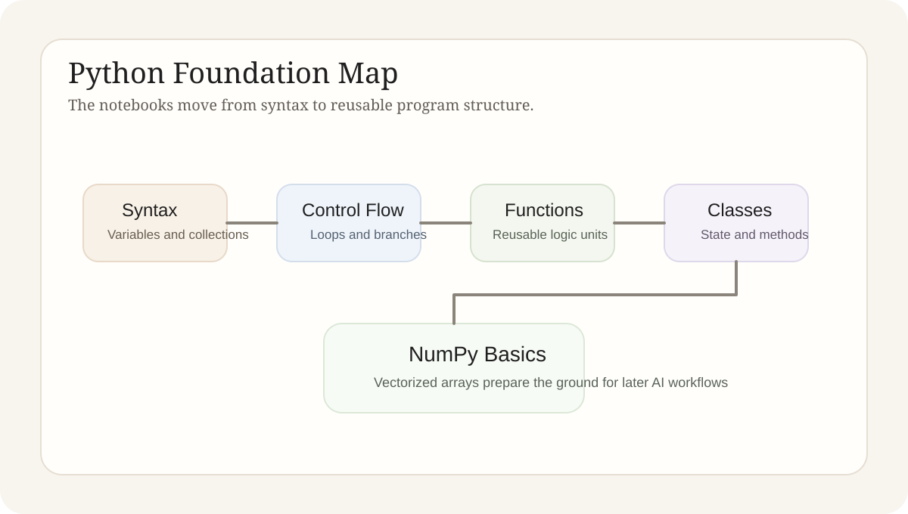

Python Basics Learning Notes
This article reorganizes variables, control flow, functions, classes, and NumPy basics into one continuous programming thread, with an emphasis on the role each layer plays in later AI engineering work.
Technical Explainer
Python basics matter not because syntax drills are difficult, but because every later RAG, agent, and API script depends on these building blocks. The real target is the ability to organize logic clearly.
1. Theme
The theme of Python basics is not how many syntax rules can be memorized. It is the construction of a programming base that can support later engineering work. Variables, lists, dictionaries, loops, and conditionals handle the lowest layer of data representation and control flow. Functions, classes, and NumPy then determine how that logic can be abstracted, reused, and extended.
This gives the study track a natural hierarchy. Syntax and data structures provide the raw language material. Functions and classes organize that material into maintainable programs. NumPy extends the same base into the array-oriented numerical environment that appears constantly in later AI work.

2. Principle
Basic syntax addresses program expression. Data types and collections determine how information is stored. Conditionals and loops determine how logic advances. Functions address reuse and interface design by letting a block of logic be named, called, and returned. Classes organize state and behavior inside the same object. NumPy extends scalar and list-based operations into array-oriented habits.
These layers are not independent topics. They are stages of abstraction. Without the lower layers, later structure becomes hollow. Without the higher layers, earlier syntax remains a pile of disconnected exercises that cannot support more complex work.
Syntax and Data
Variables, collections, and control flow provide the raw material for every later script.
Abstraction and Reuse
Functions and classes turn runnable code into code that can be maintained and extended.
Numerical Base
NumPy connects the language foundation to the array-centric workflows common in AI work.
3. Practice and Implementation
The current notebooks divide the work clearly. `pythonbasis.ipynb` covers variables, types, collections, and control flow. `functions_in_python.ipynb` focuses on parameters, return values, and function packaging. `class_in_python.ipynb` covers initialization, inheritance, and composition. `numpybasis.ipynb` extends the same base into arrays and introductory numerical operations.
The most important part of this practice is not simply finishing each notebook. It is the gradual formation of structural judgment: when logic should become a function, when state should be held inside a class, and when plain Python containers should give way to array-based computation. Those judgments are part of later engineering ability.
From Syntax to Logic
Basic data structures and control flow decide whether a program can express the task reliably at all.
From Logic to Structure
Functions and classes decide whether code stays reusable and maintainable instead of becoming a pile of fragments.
From Structure to Computation
NumPy provides the natural bridge into the data-heavy style used in later model work.
4. Current Output
This study track already provides a stable Python entry foundation. Basic syntax and data structures no longer stand as isolated facts. They can already be combined with functions, classes, and array operations to support more complete scripts and notebook experiments.
The more important gain is sensitivity to code organization. Even when later work becomes much more complex, it still rests on the same building blocks. The clearer the basics are, the less likely later experiments are to collapse because the scripts themselves are disordered.
5. Conclusion
The real result of Python basics study is not only syntax familiarity. It is the ability to organize programs. Variables, control flow, functions, classes, and array-based computation together form the structural habits underneath all later model-application code.
6. Full Code Notes
A useful reading order for this notebook set
Start with data and control flow
These are the base materials for every later abstraction and modularization step.
Then inspect functions and classes
This is where scripts begin to move from ad hoc code toward maintainable program structure.
End with NumPy
Array operations are the natural bridge from language basics to later data and model work.
Code scope. The page renders `pythonbasis.ipynb`, `functions_in_python.ipynb`, `class_in_python.ipynb`, and `numpybasis.ipynb` in full.
GitHub Repository. https://github.com/YuEugenio/Agent-Studies